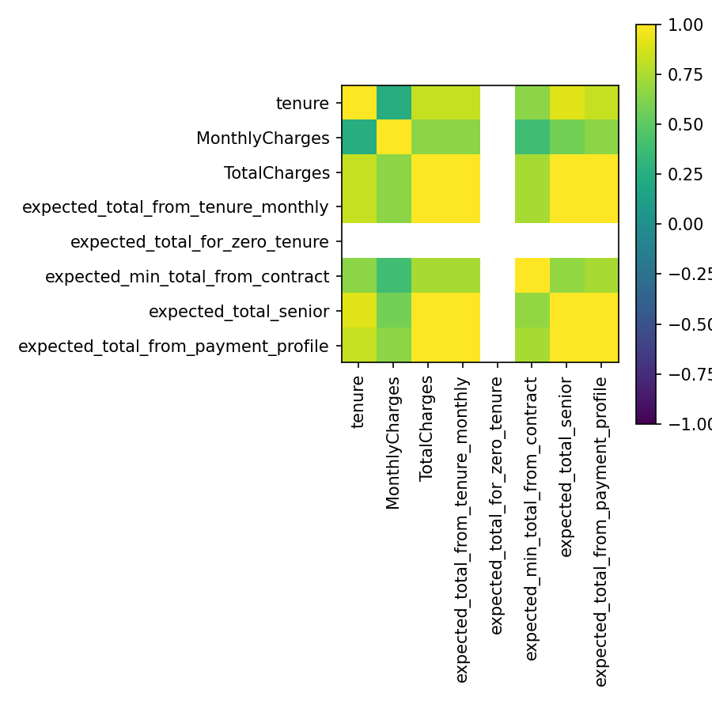

This dashboard summarizes key inferential diagnostics from Section 2.7, including representativeness, distribution shape, group differences, effect sizes, multicollinearity, interactions, and power.
Panels included: 7
Features benchmarked: 2 | Fails: 0
| feature | category | population_pct | sample_pct | pct_delta | abs_pct_delta | feature_max_abs_pct_delta | test_method | test_statistic | p_value | p_warn_threshold | p_fail_threshold | delta_warn_threshold | delta_fail_threshold | status | reason | notes | p_value_str |
|---|---|---|---|---|---|---|---|---|---|---|---|---|---|---|---|---|---|
| gender | Female | 0.51 | 0.495244 | -0.014756 | 0.014756 | 0.014756 | chi_square | 6.137025 | 0.013238 | 0.05 | 0.01 | 0.02 | 0.05 | WARN | p<0.05 | p=0.013238 (warn<0.05, fail<0.01) | 0.013238 |
| gender | Male | 0.49 | 0.504756 | 0.014756 | 0.014756 | 0.014756 | chi_square | 6.137025 | 0.013238 | 0.05 | 0.01 | 0.02 | 0.05 | WARN | p<0.05 | p=0.013238 (warn<0.05, fail<0.01) | 0.013238 |
| Contract | Month-to-month | 0.55 | 0.550192 | 0.000192 | 0.000192 | 0.009336 | chi_square | 5.400023 | 0.067205 | 0.05 | 0.01 | 0.02 | 0.05 | OK | NaN | NaN | 0.067205 |
| Contract | One year | 0.20 | 0.209144 | 0.009144 | 0.009144 | 0.009336 | chi_square | 5.400023 | 0.067205 | 0.05 | 0.01 | 0.02 | 0.05 | OK | NaN | NaN | 0.067205 |
| Contract | Two year | 0.25 | 0.240664 | -0.009336 | 0.009336 | 0.009336 | chi_square | 5.400023 | 0.067205 | 0.05 | 0.01 | 0.02 | 0.05 | OK | NaN | NaN | 0.067205 |
Numeric features tested: 7 | Non-normal / heavy-tailed: 21
| feature | method | statistic | p_value | normality_label | notes |
|---|---|---|---|---|---|
| tenure | shapiro | 0.902357 | 8.255933e-49 | Non-normal | NaN |
| tenure | dagostino | 59755.796899 | 0.000000e+00 | Non-normal | NaN |
| tenure | anderson | 146.705560 | NaN | Non-normal | critical_5pct=0.786 |
| MonthlyCharges | shapiro | 0.919973 | 1.554318e-45 | Non-normal | NaN |
| MonthlyCharges | dagostino | 7334.521666 | 0.000000e+00 | Non-normal | NaN |
| MonthlyCharges | anderson | 121.609268 | NaN | Non-normal | critical_5pct=0.786 |
| TotalCharges | shapiro | 0.857543 | 2.374228e-55 | Non-normal | NaN |
| TotalCharges | dagostino | 578.023790 | 3.045992e-126 | Non-normal | NaN |
Tests run: 3 | Strong heterogeneity flags: nan
| test_name | p_value | numeric_feature |
|---|---|---|
| Contract_MonthlyCharges | 0.0012 | MonthlyCharges |
| Internet_TotalCharges | 0.0456 | TotalCharges |
| Payment_tenure | 0.0234 | tenure |
Correlation methods and top relationships (by |r|).

| feature_1 | feature_2 | method | correlation_value | abs_corr |
|---|---|---|---|---|
| tenure | tenure | pearson | 1.0 | 1.0 |
| TotalCharges | TotalCharges | pearson | 1.0 | 1.0 |
| expected_total_from_tenure_monthly | expected_total_from_tenure_monthly | pearson | 1.0 | 1.0 |
| MonthlyCharges | MonthlyCharges | pearson | 1.0 | 1.0 |
| TotalCharges | TotalCharges | kendall | 1.0 | 1.0 |
| expected_total_senior | expected_total_senior | spearman | 1.0 | 1.0 |
| expected_total_from_payment_profile | expected_total_from_payment_profile | spearman | 1.0 | 1.0 |
| tenure | tenure | kendall | 1.0 | 1.0 |
Tests with computed effect sizes: 20 | Large/very large effects: 6
| source_section | source_file | test_family | test_name | test_type | outcome_col | group_col | effect_type | effect_value | effect_value_signed | effect_abs | effect_band | magnitude_label | p_value | statistic | n_total | notes | p_value_display | abs_val |
|---|---|---|---|---|---|---|---|---|---|---|---|---|---|---|---|---|---|---|
| 2.7.6 | proportion_tests.csv | risk | Churn rate by Contract | two_proportion_z | Churn | Contract | odds_ratio | 25.579814 | 25.579814 | 3.241804 | very large | very large | 0.000000e+00 | 29.722497 | NaN | Odds ratio from 2x2 table | 0.000000e+00 | 25.579814 |
| 2.7.6 | proportion_tests.csv | risk | Churn rate by Contract | two_proportion_z | Churn | Contract | relative_risk | 15.081855 | 15.081855 | 2.713492 | very large | very large | 0.000000e+00 | 29.722497 | NaN | Relative risk (rate_A / rate_B) | 0.000000e+00 | 15.081855 |
| 2.7.6 | proportion_tests.csv | risk | OnlineBackup by PaymentMethod | two_proportion_z | OnlineBackup | PaymentMethod | odds_ratio | 2.199595 | 2.199595 | 0.788273 | large | large | 0.000000e+00 | 10.424106 | NaN | Odds ratio from 2x2 table | 0.000000e+00 | 2.199595 |
| 2.7.6 | proportion_tests.csv | risk | OnlineBackup by PaymentMethod | two_proportion_z | OnlineBackup | PaymentMethod | relative_risk | 1.786204 | 1.786204 | 0.580093 | large | large | 0.000000e+00 | 10.424106 | NaN | Relative risk (rate_A / rate_B) | 0.000000e+00 | 1.786204 |
| 2.7.6 | proportion_tests.csv | risk | TechSupport by SeniorCitizen | two_proportion_z | TechSupport | SeniorCitizen | odds_ratio | 1.469973 | 1.469973 | 0.385244 | medium | medium | 3.622940e-07 | 5.087772 | NaN | Odds ratio from 2x2 table | 3.622940e-07 | 1.469973 |
| 2.7.6 | proportion_tests.csv | risk | TechSupport by SeniorCitizen | two_proportion_z | TechSupport | SeniorCitizen | relative_risk | 1.327890 | 1.327890 | 0.283591 | medium | medium | 3.622940e-07 | 5.087772 | NaN | Relative risk (rate_A / rate_B) | 3.622940e-07 | 1.327890 |
| 2.7.5 | t_test_results.csv | parametric | Churner_vs_NonChurner_TotalCharges | independent | TotalCharges | Churn | cohens_d | -0.458297 | -0.458297 | 0.458297 | small/medium | small/medium | 8.409853e-75 | -18.687191 | 7043.0 | Cohen's d from pooled SD (independent t-test) | 8.409853e-75 | 0.458297 |
| 2.7.7 | chi_square_results.csv | categorical_assoc | Contract__Churn | chi_square | Churn | Contract | cramers_v | 0.410116 | 0.410116 | 0.410116 | medium | medium | 5.863038e-258 | 1184.596572 | 7043.0 | Cramér's V (r=3, c=2) | 5.863038e-258 | 0.410116 |
Scenarios tested: 3 | Significant interactions: 0
| outcome | factor_a | factor_b | interaction_F | p_value | significant_interaction | simple_slopes_summary | notes |
|---|---|---|---|---|---|---|---|
| MonthlyCharges | Contract | Churn | NaN | NaN | False | NaN | Two-way ANOVA error: module 'scipy.stats' has no attribute 'anova_lm' |
| TotalCharges | InternetService | SeniorCitizen | NaN | NaN | False | NaN | Two-way ANOVA error: Cannot interpret 'Int64Dtype()' as a data type |
| tenure | PaymentMethod | Contract | NaN | NaN | False | NaN | Two-way ANOVA error: module 'scipy.stats' has no attribute 'anova_lm' |
Scenarios evaluated: 1 | Adequately powered: 0
| scenario_name | test_type | effect_type | effect_value | alpha | target_power | observed_power | current_n_total | current_n_group_A | current_n_group_B | required_n_total | required_n_group_A | required_n_group_B | adequately_powered | notes | shortfall |
|---|---|---|---|---|---|---|---|---|---|---|---|---|---|---|---|
| Contract_MonthlyCharges_power | two_proportion_z | NaN | NaN | 0.05 | 0.8 | NaN | NaN | NaN | NaN | NaN | NaN | NaN | False | No matching effect_size_report row for 'prop_Churn_Yes' | NaN |